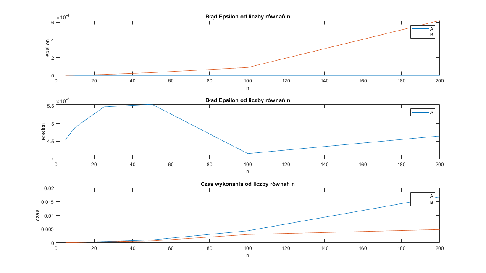
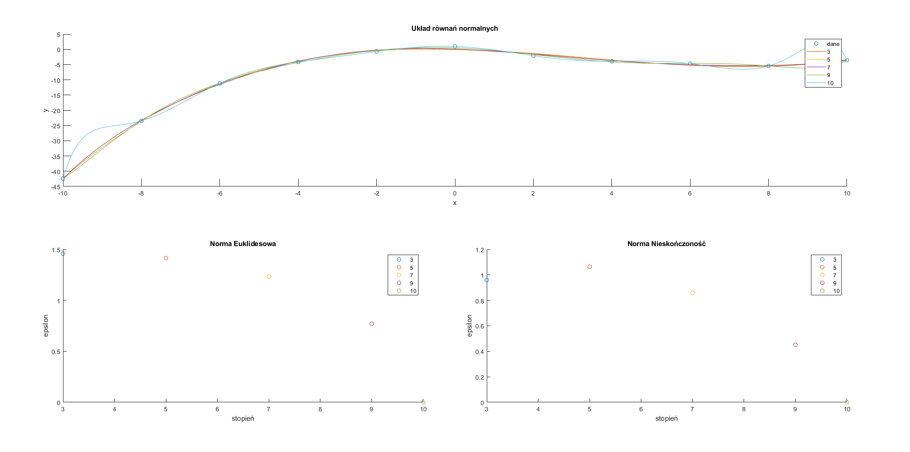
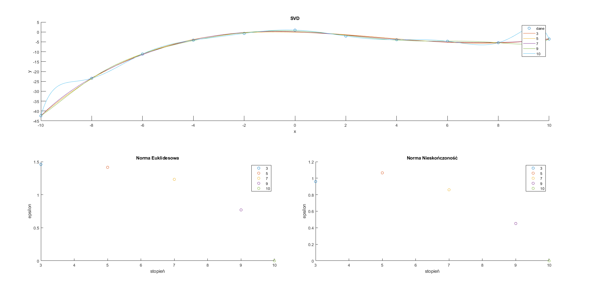

student: Bartłomiej Krawczyk
indeks: 310774
$$ \begin{equation} a_{ij} = \begin{cases} -10, & \text{dla $j = i$}\\ 3, & \text{dla $j = i - 1$ lub $j = i + 1$}\\ 0, & \text{dla pozostałych} \end{cases} \end{equation} $$
$$ \begin{equation} b_{i} = 2.5 - 0.5i \end{equation} $$
Funkcja generująca macierz A oraz wektor b:
function [A,b] = paramsA(n)
A = zeros(n, n);
b = zeros(n, 1);
for i = 1 : n
A(i, i) = -10;
b(i, 1) = 2.5 - 0.5 * i;
end
for i = 2 : n
A(i, i - 1) = 3;
A(i - 1, i) = 3;
end
end
Przykładowa macierz $A$ dla $n = 5$:
-10 3 0 0 0
3 -10 3 0 0
0 3 -10 3 0
0 0 3 -10 3
0 0 0 3 -10
Przykładowy wektor $b$ dla $n = 5$:
2.0000
1.5000
1.0000
0.5000
0
Cechy macierzy:
$$ \begin{equation} a_{ij} = \begin{cases} 4n^2 + (2i + 3) n, & \text{dla $j = i$}\\ 2 (i + j) + 1, & \text{dla $j \neq i $}\\ \end{cases} \end{equation} $$
$$ \begin{equation} b_{i} = 2.5 + 0.6i \end{equation} $$
Funkcja generująca macierz A oraz wektor b:
function [A,b] = paramsB(n)
A = zeros(n, n);
b = zeros(n, 1);
for i = 1 : n
for j = 1 : n
A(i, j) = 2 * (i + j) + 1;
end
end
for i = 1 : n
A(i, i) = 4 * n ^ 2 + (2 * i + 3) * n;
b(i, 1) = 2.5 + 0.6 * i;
end
end
Przykładowa macierz $A$ dla $n = 5$:
125 7 9 11 13
7 135 11 13 15
9 11 145 15 17
11 13 15 155 19
13 15 17 19 165
Przykładowy wektor $b$ dla $n = 5$:
3.1000
3.7000
4.3000
4.9000
5.5000
Cechy macierzy:
Dominację diagonalną dla macierzy symetrycznej sprawdzałem programem:
function d = testDiagDom(A)
% Test whether symmetric matrix is diagonally dominant
% A - symmetric matrix
% d - is matrix digonally dominant
[n, ~] = size(A);
d = true;
for i = 1 : n
if (sum(abs(A(i, :))) - abs(A(i, i))) > abs(A(i, i))
d = false;
end
end
end
Silna dominacja diagonalna wystąpiła w obu testowanych wariantach dla wszystkich testowanych wymiarów.
Napisać uniwersalną procedurę w Matlabie o odpowiednich parametrach wejścia i wyjścia (solwer), rozwiązującą układ $n$ równań liniowych $Ax = b$, wykorzystując podaną metodę.
Nie sprawdzać w procedurze, czy dana macierz $A$ spełnia wymagania stosowalności metody.
Obliczyć błąd rozwiązania $\varepsilon = ∥A\tilde{x} − b∥_2$ (skorzystać z funkcji norm Matlaba).
Proszę zastosować następnie swoją procedurę w programie do rozwiązania obydwu (jeśli można) lub jednego z układów równań dla podanych niżej macierzy $A$ i wektorów $b$, przyjmując: $n = 5, 10, 25, 50, 100, 200$.
Metoda: faktoryzacji $LDL^T$
Proszę wykonać wykres (wykresy) zależności błędu $\varepsilon$ od liczby równań $n$.
Solver równania $Ax = b$
Wyznaczenie wyniku na podstawie rozwiązania układów równań z macierzami trójkątnymi:
$$ Ax = LDL^T x = L(DL^T x) = b $$
$$ y = DL^T x $$
$$ Ax = Ly = b $$
gdzie macierze $L$ i $DL^T$ są macierzami trójkątnymi.
Najpierw rozwiązujemy układ $Ly=b$ w poszukiwaniu $y$, a następnie podstawiamy wyliczoną wartość do układu $DL'x=y$ i rozwiązujemy w poszukiwaniu $x$.
Program:
function x = solveLDLt(A, b)
% solve using LDL' decomposition
% A = LDL'
[L, D] = LDLt(A);
% First solve equation Ly = b for y
% L - lower triangular matrix
y = solveLowerTrigMatrix(L, b);
% Then solve equation DL' x = y for x
% DL' - upper triangular matrix
x = solveUpperTrigMatrix(D * L', y);
end
Metoda faktoryzacji $LDL^T$
Algorytm faktoryzacji najłatwiej osiągnąć poprzez przedstawienie macierzy $A$ jako iloczyn macierzy $L$ oraz $DL^T$.
$L$ - macierz trójkątna dolna z $1$ na diagonali
$D$ - macierz diagonalna
$$\begin{bmatrix} a_{11} & a_{12} & ... & a_{1n} \\ a_{21} & a_{22} & ... & a_{2n} \\ ... & ... & ... & ... \\ a_{n1} & a_{n2} & ... & a_{nn} \\ \end{bmatrix} = \begin{bmatrix} 1 & 0 & ... & 0 \\ \overline{l}_{21} & 1 & ... & 0 \\ ... & ... & ... & ... \\ \overline{l}_{n1} & \overline{l}_{n2} & ... & 1 \\ \end{bmatrix} \begin{bmatrix} d_{11} & d_{12} \overline{l}_{21} & ... & d_{1n} \overline{l}_{n1} \\ 0 & d_{22} & ... & d_{2n} \overline{l}_{n2} \\ ... & ... & ... & ... \\ 0 & 0 & ... & d_{nn} \\ \end{bmatrix} $$
Kolejno rozwiązując równania skalarne jesteśmy w stanie przedstawić to działanie w postaci algorytmu.
Algorytm:
$$ d_{ii} = a_{ii} - \sum_{k = 1}^{i-1} {\overline{l}_{ik}^2 d_{kk}} $$
$$ \overline{l}_{ji} = ({a_{ji} - \sum_{k=1}^{i-1} {\overline{l}_{jk} d_{kk} \overline{l}_{ik}}}) / d_{ii}, i = 1, ..., n, j = i + 1, ..., n $$
Program:
function [L, D] = LDLt(A)
[n, ~] = size(A);
L = zeros(n, n);
D = zeros(n, n);
for i = 1 : n
L(i, i) = 1;
D(i, i) = A(i, i);
for k = 1 : i - 1
D(i, i) = D(i, i) - L(i, k) ^ 2 * D(k, k);
end
for j = i + 1 : n
L(j, i) = A(j, i);
for k = 1 : i - 1
L(j, i) = L(j, i) - L(j, k) * D(k, k) * L(i, k);
end
L(j, i) = L(j, i) / D(i, i);
end
end
end
Rozwiązywanie układu równań $Ax = b$ z macierzą trójkątną dolną
Kolejno rozwiązujemy po jednym układzie równań z jedną niewiadomą. Za każdym razem wyliczamy po jednej zmiennej i w kolejnych krokach podstawiamy wyliczone wartości do reszty równań, aby także mieć równanie z jedną niewiadomą.
Algorytm:
$$ x_1 = \frac{b_1}{a_{11}} $$
$$ x_k = \frac{b_k - \sum_{j = 1}^{k - 1} {a_{kj} x_j}}{a_{kk}}, k = 2, 3, ..., n $$
Program w matlab:
function x = solveLowerTrigMatrix(A, b)
% solve linear equation with lower triangular matrix
[n, ~] = size(A);
x = zeros(n, 1);
for k = 1 : n
x(k, 1) = b(k, 1);
for j = 1 : k - 1
x(k, 1) = x(k, 1) - A(k, j) * x(j, 1);
end
x(k, 1) = x(k, 1) / A(k, k);
end
end
Rozwiązywanie układu równań $Ax = b$ z macierzą trójkątną górną
Algorytm:
$$ x_n = \frac{b_n}{a_{nn}} $$
$$ x_k = \frac{b_k - \sum_{j = k + 1}^{n} {a_{kj} x_j}}{a_{kk}}, k = n - 1, n - 2, ..., 1 $$
Program w matlab:
function x = solveUpperTrigMatrix(A, b)
% solve linear equation with upper triangular matrix
[n, ~] = size(A);
x = zeros(n, 1);
for k = n : -1 : 1
x(k, 1) = b(k, 1);
for j = k + 1 : n
x(k, 1) = x(k, 1) - A(k, j) * x(j, 1);
end
x(k, 1) = x(k, 1) / A(k, k);
end
end
Program:
function plot_1_1()
sizes = [5 10 25 50 100 200];
epsilonsA = zeros(size(sizes));
timesA = epsilonsA;
epsilonsB = epsilonsA;
timesB = epsilonsA;
i = 1;
for n = sizes
[A, b] = paramsA(n);
[epsilonsA(i), timesA(i)] = solveAndCalculateEpsilon(A, b);
[A, b] = paramsB(n);
[epsilonsB(i), timesB(i)] = solveAndCalculateEpsilon(A, b);
i = i + 1;
end
tiledlayout(2, 1);
nexttile
plot(sizes, epsilonsA, sizes, epsilonsB);
title('Błąd Epsilon od liczby równań n');
xlabel('n');
ylabel('epsilon');
legend('A', 'B');
nexttile
plot(sizes, timesA, sizes, timesB);
title('Czas wykonania od liczby równań n');
xlabel('n');
ylabel('czas');
legend('A', 'B');
end
function [epsilon, time] = solveAndCalculateEpsilon(A, b)
tic
x = solveLDLt(A, b);
time = toc;
epsilon = norm(A * x - b, 2);
end
Obie testowane macierze są symetryczne, także można było zastosować faktoryzację $LDL^T$.
Wykorzystanie faktoryzacji $LDL^T$ do rozwiązania układów równań sprawdziło się całkiem nieźle. Błąd $\varepsilon = ∥A\tilde{x} − b∥_2$ nawet dla bardzo dużych układów równań nie przekroczył poziomu $10^{-12}$. Błąd przy coraz to większych macierzach wydaje się rosnąć liniowo.
Napisać uniwersalną procedurę w Matlabie o odpowiednich parametrach wejścia i wyjścia, rozwiązującą układ $n$ równań liniowych $Ax = b$, wykorzystując metodę iteracyjną Jacobiego.
Nie sprawdzać w procedurze, czy dana macierz $A$ spełnia wymagania stosowalności metody.
Jej parametry wejściowe powinny zawierać m.in. wartość graniczną $\delta$ błędu między kolejnymi przybliżeniami
rozwiązania, liczonego jako norma euklidesowa z ich różnicy (skorzystać z funkcji
norm Matlaba). Przyjąć jako kryterium stopu warunek: δ = 10−8 ≜ 1e − 8.
$$ \delta = 10^{-8} \triangleq 1e-8 $$
Proszę zastosować tę procedurę do rozwiązania właściwego układu równań spośród przedstawionych poniżej dla $n = 5, 10, 25, 50, 100, 200$.
Proszę sprawdzić dokładność rozwiązania licząc także błąd $\varepsilon$ i dla każdego układu równań wykonać rysunek zależności tego błędu od liczby równań $n$. Jeśli był rozwiązywany ten sam układ równań, co w p. 1, proszę porównać czasy obliczeń dla różnych algorytmów i wymiarów zadań.
Dekompozycja A = L + D + U
function [L, D, U] = LDU(A)
% L = tril(A, -1);
% D = diag(diag(A));
% U = triu(A, 1);
[n, ~] = size(A);
L = zeros(n, n);
D = zeros(n, n);
U = zeros(n, n);
for i = 1 : n
D(i, i) = A(i, i);
L(i, 1 : i - 1) = A(i, 1 : i - 1);
U(i, n: -1 : i + 1) = A(i, n : -1 : i + 1);
end
end
Metoda iteracyjna Jacobiego:
$$ A = L + D + U $$
Jesteśmy w stanie zapisać równanie $Ax = b$ w postaci:
$$ Dx = -(L + U)x + b $$
Z czego wynikła metoda Jacobiego:
$$ x^{(i + 1)} = -D^{-1}(L + U)x^{(i)} + D^{-1}b, i = 0, 1, 2, ... $$
Algorytm:
$$ x_j^{(i+1)} = - \frac{1}{d_{jj}} (\sum_{k = 1}^{n}{(l_{jk} + u_{jk})x_k^{(i)} - b_j}), j = 1,2, ..., n $$
Program:
function x = solveJacobi(A, b, delta)
[n, ~] = size(A);
[L, D, U] = LDU(A);
% assume x0 consists of zeros
x1 = b ./ diag(D);
x2 = nextX(L, D, U, b, n, x1);
while norm(x1 - x2, 2) >= delta
x1 = x2;
x2 = nextX(L, D, U, b, n, x1);
end
x = x2;
end
function x2 = nextX(L, D, U, b, n, x1)
x2 = zeros(n, 1);
for j = 1 : n
for k = 1 : n
x2(j, 1) = x2(j, 1) + (L(j, k) + U(j, k)) * x1(k, 1);
end
x2(j, 1) = - (x2(j, 1) - b(j, 1)) / D(j, j);
end
end

function plot_1_2()
sizes = [5 10 25 50 100 200];
epsilonsA = zeros(size(sizes));
timesA = epsilonsA;
epsilonsB = epsilonsA;
timesB = epsilonsA;
i = 1;
for n = sizes
[A, b] = paramsA(n);
[epsilonsA(i), timesA(i)] = solveAndCalculateEpsilon(A, b);
[A, b] = paramsB(n);
[epsilonsB(i), timesB(i)] = solveAndCalculateEpsilon(A, b);
i = i + 1;
end
tiledlayout(3, 1);
nexttile
plot(sizes, epsilonsA, sizes, epsilonsB);
title('Błąd Epsilon od liczby równań n');
xlabel('n');
ylabel('epsilon');
legend('A', 'B');
nexttile
plot(sizes, epsilonsA);
title('Błąd Epsilon od liczby równań n');
xlabel('n');
ylabel('epsilon');
legend('A');
nexttile
plot(sizes, timesA, sizes, timesB);
title('Czas wykonania od liczby równań n');
xlabel('n');
ylabel('czas');
legend('A', 'B');
end
function [epsilon, time] = solveAndCalculateEpsilon(A, b)
delta = 1e-8;
tic
x = solveJacobi(A, b, delta);
time = toc;
epsilon = norm(A * x - b, 2);
end
Warunkiem dostatecznym zbieżności metody Jacobiego jest silna diagonalna dominacja macierzy $A$. W przypadku obu macierzy A) oraz B) występuje silna diagonalna dominacja. Wynika z tego, że można zastosować metodę Jacobiego do rozwiązania układów równań z obu punktów - metoda będzie zbieżna.
Wyniki z wykorzystaniem metody Jacobiego są znacznie gorsze niż w przypadku metody z faktoryzacją $LDL^T$. Błąd w przypadku A) oraz B) jest o kilka rzędów wielkości większy. W przypadku A) maksymalny błąd jest rzędu $10^{-7}$, a w przypadku B) jest rzędu $10^{-3}$.
Ponadto błąd rozwiązania w przypadku A) nie rośnie proporcjonalnie do ilości równań. Podejrzewam, że wynika to z zadanego warunku stopu $10^{-8}$. Gdy osiągamy zadaną odległość między kolejnymi przybliżeniami rozwiązania algorytm przerywa i w każdym przypadku może to zrobić w innej iteracji.
Czas wyliczeń w przypadku B) jest na korzyść rozwiązania metodą iteracyjną, a w przypadku A) jest na odwrót.
Program do liczenia czasu:
function time()
sizes = [5 10 25 50 100 200];
timesA = zeros(size(sizes));
timesB = timesA;
i = 1;
for n = sizes
[A, b] = paramsA(n);
timesA(i) = timeSolveLDLt(A, b);
[A, b] = paramsB(n);
timesB(i) = timeSolveLDLt(A, b);
i = i + 1;
end
tiledlayout(2, 1);
nexttile
plot(sizes, timesA, sizes, timesB);
title('LDLt');
xlabel('n');
ylabel('czas');
legend('A', 'B');
i = 1;
for n = sizes
[A, b] = paramsA(n);
timesA(i) = timeSolveJacobi(A, b);
[A, b] = paramsB(n);
timesB(i) = timeSolveJacobi(A, b);
i = i + 1;
end
nexttile
plot(sizes, timesA, sizes, timesB);
title('Jacobi');
xlabel('n');
ylabel('czas');
legend('A', 'B');
end
function time = timeSolveLDLt(A, b)
tic
solveLDLt(A, b);
time = toc;
end
function time = timeSolveJacobi(A, b)
tic
solveJacobi(A, b, 1e-8);
time = toc;
end
Dla podanych w tabeli danych pomiarowych (próbek) metodą najmniejszych kwadratów należy wyznaczyć funkcję wielomianową $y = f(x)$ (tzn. wektor współczynników) najlepiej aproksymującą te dane.
| $x_i$ | $y_i$ |
|---|---|
| -10 | -42.417 |
| -8 | -23.440 |
| -6 | -11.160 |
| -4 | -4.128 |
| -2 | -0.725 |
| 0 | 0.942 |
| 2 | -2.069 |
| 4 | -3.908 |
| 6 | -4.705 |
| 8 | -5.438 |
| 10 | -3.578 |
Proszę przetestować wielomiany stopni: $3, 5, 7, 9, 10$. Kod aproksymujący powinien być uniwersalną procedurą w Matlabie o odpowiednich parametrach wejścia i wyjścia.
W sprawozdaniu proszę przedstawić na rysunku otrzymaną funkcję na tle danych (funkcję aproksymującą proszę próbkować przynajmniej 10 razy częściej niż dane).
Do rozwiązania zadania najmniejszych kwadratów proszę wykorzystać najpierw układ równań normalnych, a potem rozkład SVD.
Do rozwiązywania układu równań i dekompozycji użyć solwerów Matlaba. Porównać efektywność obydwu podejść.
Do liczenia wartości wielomianu użyć funkcji polyval.
Proszę obliczyć błąd aproksymacji w dwóch normach: euklidesowej oraz maksimum (nieskończoność). W obydwu
przypadkach skorzystać z funkcji norm Matlaba.
Program:
function [x,y] = params3()
x = [-10 : 2 : 10]';
y = [-42.417 -23.440 -11.160 -4.128 -0.725 0.942 -2.069 -3.908 -4.705 -5.438 -3.578]';
end
Postać funkcji wielomianowej: $$ f(x) = \sum_{i=0}^{n} a_i x^i $$
Macierz z wyliczonymi wartościami stojącymi przy poszczególnych współczynnikach funkcji: $$ A = \begin{bmatrix} x_0^0 & x_0^1 & ... & x_0^n\\ x_1^0 & x_1^1 & ... & x_1^n\\ x_2^0 & x_2^1 & ... & x_2^n\\ ... & ... & ... & ...\\ x_N^0 & x_N^1 & ... & x_N^n\\ \end{bmatrix} $$
Wektor szukanych współczynników funkcji wielomianowej: $$ a = [a_0 a_1 ... a_n]^T $$
Wektor wyników: $$ y = f(x_j), j = 0, 1, ..., N $$
W tak zapisanym zadaniu chcemy minimalizować funkcję:
$$ H(a) = (||y - Aa||_2)^2 $$
Dalej będziemy rozwiązywać zadanie LZNK
$$ A a = y $$
Program wyliczający macierz $A$:
function A = applyFunction(x, n)
A = zeros(length(x), n + 1);
for i = 1 : length(x)
for j = 0 : n
A(i, j + 1) = x(i)^j;
end
end
end
Rozwiązujemy równanie:
$$ A^TAa = A^Ty $$
Program:
function a = approxNormal(x, y, n)
A = applyFunction(x, n);
a = linsolve(A' * A, A' * y);
end

Program:
function plot_1_3_1()
degrees = [3 5 7 9 10];
[x, y] = params3();
tiledlayout(2, 2);
nexttile([1 2]);
hold on
plot(x, y, 'o');
for d = degrees
plotApproximatedPolynomial(x, y, d);
end
hold off
title('Układ równań normalnych');
xlabel('x');
ylabel('y');
legend('dane', '3', '5', '7', '9', '10');
nexttile;
hold on
for d = degrees
plotApproximatedError(x, y, d, 2);
end
hold off
title('Norma Euklidesowa');
xlabel('stopień');
ylabel('epsilon');
legend('3', '5', '7', '9', '10');
nexttile;
hold on
for d = degrees
plotApproximatedError(x, y, d, Inf);
end
hold off
title('Norma Nieskończoność');
xlabel('stopień');
ylabel('epsilon');
legend('3', '5', '7', '9', '10');
end
function plotApproximatedPolynomial(x, y, degree)
minX = min(x);
maxX = max(x);
sampleX = minX : (maxX - minX) / 1000 : maxX;
a = approxNormal(x, y, degree);
plot(sampleX, polyval(flip(a), sampleX));
end
function plotApproximatedError(x, y, degree, n)
a = approxNormal(x, y, degree);
result = polyval(flip(a), x);
epsilon = norm(result - y, n);
scatter(degree, epsilon);
end
$$ ||y - Aa||_2 = ||y - U \Sigma V^T a||_2 = ||U^Ty - \Sigma (V^T a)||_2 = ||\tilde{y} - \Sigma \tilde{a}||_2 $$
$$ \tilde{y} = U^Ty $$
$$ \tilde{a} = V^Ta $$
Rozwiązanie jednoznaczne o minimalnej normie otrzymamy przyjmując:
$$ \hat{\tilde{a}} = \begin{bmatrix} \tilde{y}_1 / \sigma_1\\ ...\\ \tilde{y}_k / \sigma_k\\ 0\\ ... \\ 0 \end{bmatrix} $$
gdzie:
$k$ - rząd macierzy $A$
Algorytm:
$$ \hat{a} = V\begin{bmatrix} \tilde{y}_1 / \sigma_1\\ ...\\ \tilde{y}_k / \sigma_k\\ 0\\ ... \\ 0 \end{bmatrix} $$
Program:
function a = approxSvd(x, y, n)
A = applyFunction(x, n);
[U, SIGMA, V] = svd(A);
s = diag(SIGMA);
k = rank(A);
y_ = U' * y;
a_ = [y_(1:k, 1) ./ s(1:k, 1); zeros(n - k, 1)];
a = V * a_;
end
Program do generowania wykresów z SVD jest bardzo podobny do tego z układem równań normalnych.

Obie metody z wykorzystaniem układu równań normalnych oraz rozkładu SVD poradziły sobie bardzo dobrze z tym zadaniem.
W przypadku aproksymowania funkcją wielomianową o wyższych stopniach widać, że funkcja bardzo dostosowuje się do danych. Błąd aproksymacji jest lepszy jednak występuje przeuczenie.
W przypadku tych danych wydaje się, że najlepiej aproksymuje funkcja o stopniu 7 - nie widać jeszcze zbytniego przeuczenia, a błąd jest mniejszy niż aproksymacja funkcjami o niższych stopniach.
Wielomiany o stopniach 3 oraz 5 także poradziły sobie całkiem nieźle.